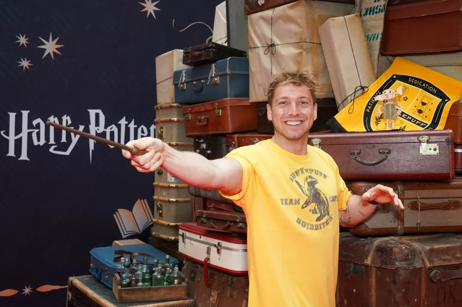
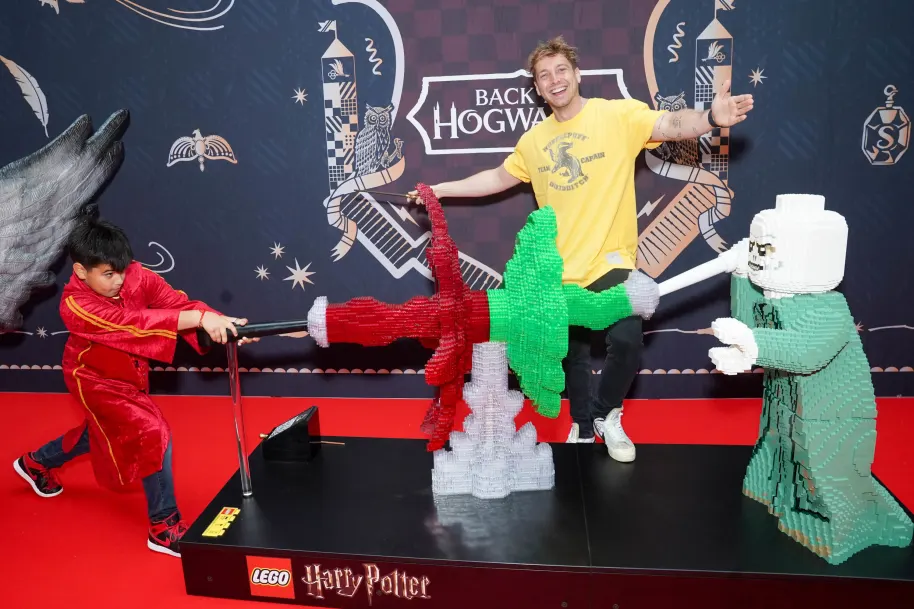
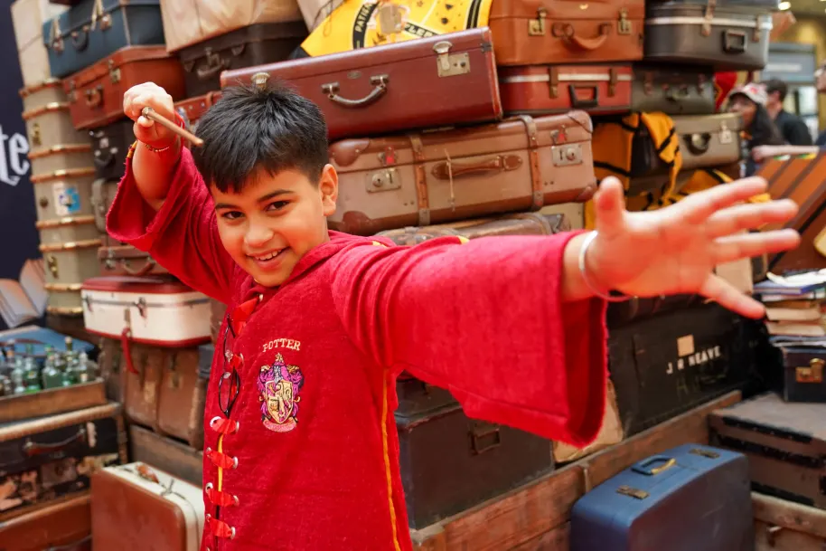
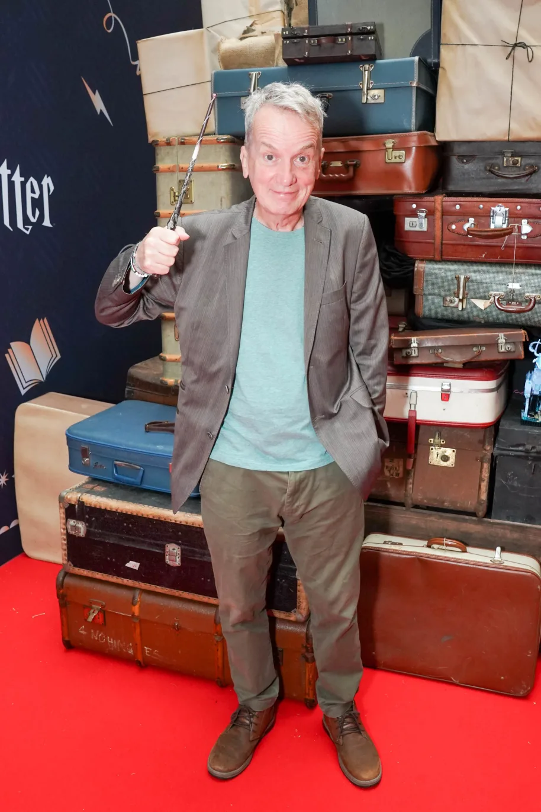
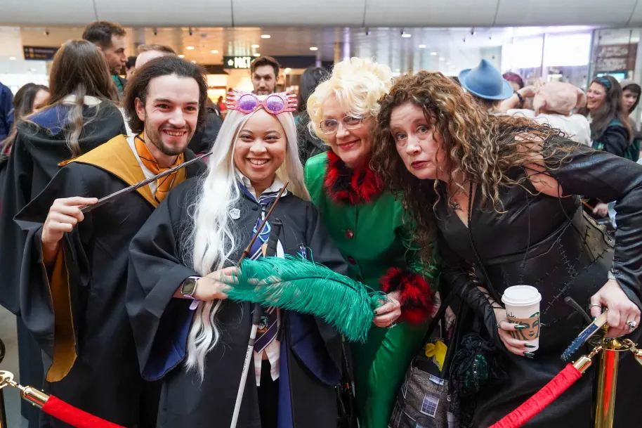
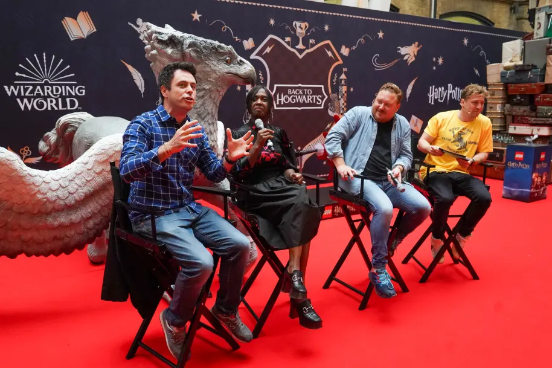
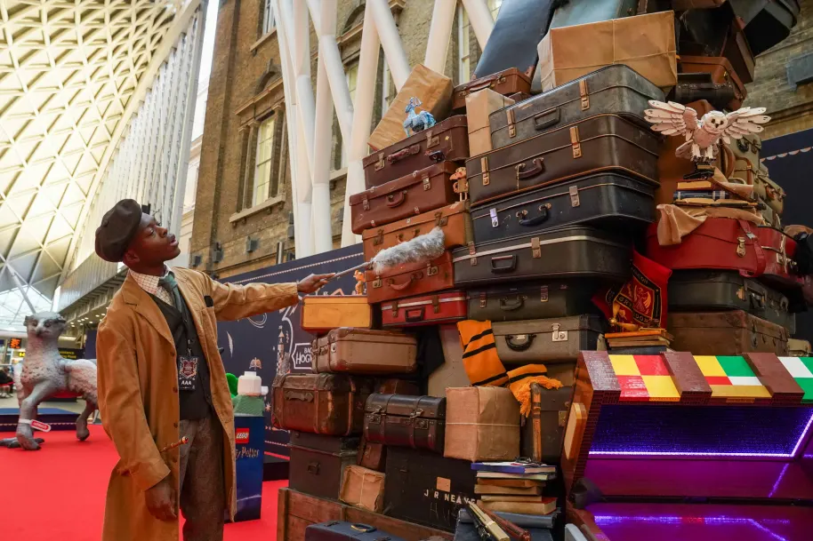
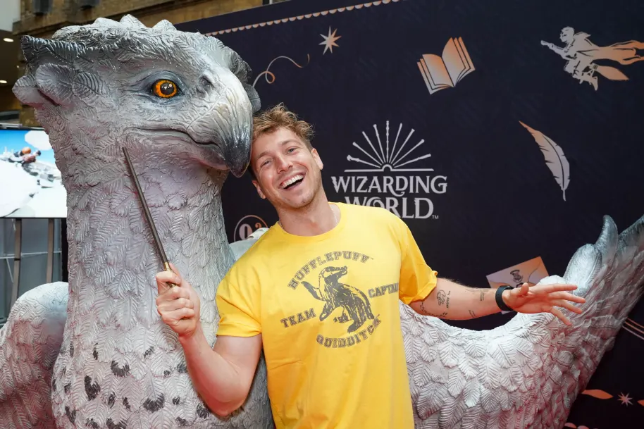
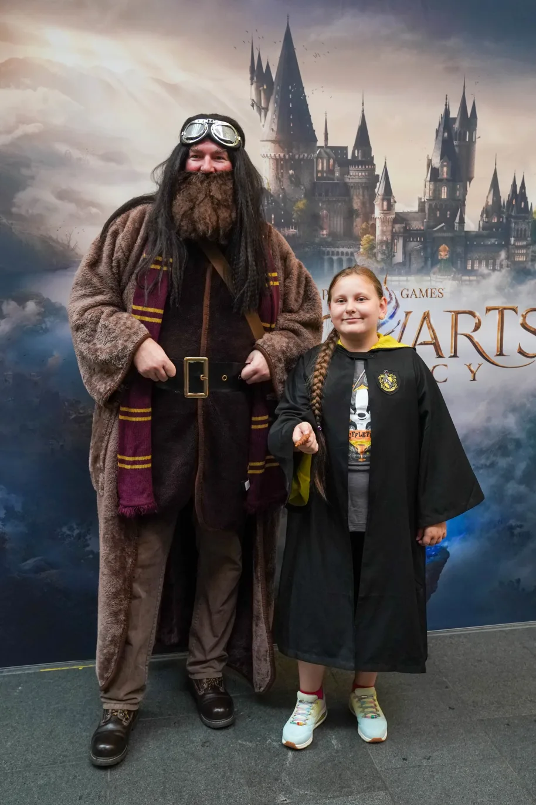
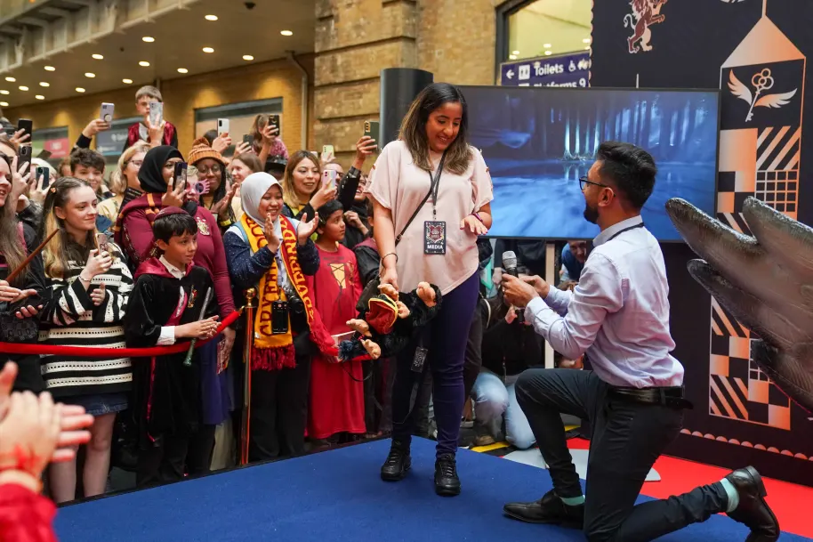

It's that time of year once again. Here in London, we once again flocked to King’s Cross Station (just like a young Harry Potter once did) and readied ourselves for the departure of the Hogwarts Express at 11 o’ clock – something we, and the fans, have been doing for many years, counting down the famous moment from the books and films together.
But it’s not just about the countdown! There was Butterbeer, a giant wand spinner and even some bewitched trunks. Read on to discover all the magical happenings.

Sam Thompson was our Chosen One
With so many Harry Potter fans flooding a functioning train station, you’re going to need a friendly face to help keep order. Thankfully, we had the always-joyful Sam Thompson with us to keep spirits high and guide us through today’s festivities. Thank you, Sam! Maybe there’s a Hogwarts Headmaster job in your future.

A special guest joined us for our famous countdown
You may have heard that we recently put on an extremely enchanting competition, inviting one lucky Harry Potter fan to lead our countdown at 11 o’ clock. We tasked fans to send us videos of themselves performing their best countdowns from 10 to 1 – and we received many iconic and creative entries. Our lucky winner? The charismatic and wonderful Arnav! Arnav, you smashed it, mate – fancy doing New Year’s Eve next?

Frank Skinner said hello!
Hello Frank Skinner! Yes, the comedian and host popped down to King's Cross alongside hundreds of fans - and we couldn't resist a little photoshoot with him. We didn't force him into a singalong of Three (Gryffindor) Lions though, promise.

The fans excelled themselves with their Wizarding World outfit choices
Back to Hogwarts Day is an excuse to do many things (re-watch the Harry Potter films back-to-back, treat yourself to a Wizarding World trinket, or simply refresh our website over and over…) but for some fans, the best way to celebrate was through the power of fashion. We always look forward to your fabulous ensembles on the 1st September, and we were not disappointed this year.

Our AR filters caused much amusement
Forgot to wear a costume? Not to worry – we’ve launched two special Back to Hogwarts filters this year on Instagram and TikTok to help you transform digitally. Our Chocolate Frog filter, which invites you to discover your famous wizarding future, is fresh out the box and available for you to try now. – while our Mis-Spelled filter will finally answer the question you’ve always asked yourself: “what would I look like if I was magically vomiting slugs”? We don’t think a certain Ron Weasley would approve of this one.
The cast of Harry Potter and the Cursed Child came to visit for a special Q&A…
London Cursed Child cast-members Michelle Gayle (Hermione) and Tom Aldridge (Ron) popped down to King’s Cross to answer fans’ burning questions, alongside Cursed Child Illusion Designer John Bulleid, the man behind the magical sequences you see in the play, such as the beautiful Patronus effect.

Anyone for a Scavenger Hunt?
If the King's Cross festivities weren't enough, it was revealed that a scavenger hunt had been set up around London, with the chance to win tickets for the play at the Palace Theatre. Equipped with stamp cards, fans set about the capital solving clues, determined to snap up the grand prize.

We encountered some very funky trunks… and a giant LEGO® one!
Packing your trunk is an integral part of Back to Hogwarts preparation – but at King’s Cross this year… we bumped into some cases behaving rather strangely. Well, we’re pretty sure trunks don’t usually hiccough or sneeze?! Thankfully, the trunks were, in fact, not bewitched by an unruly stranger, but a fun surprise for our King’s Cross visitors. A huge thank you to our well-dressed King’s Cross porters for keeping a handle on them!
Once the trunks had calmed down… we were greeted with the pièce de resistance: a lovely life-sizedLEGO® trunk full of prizes! And yes, spoiler alert, the prizes were also LEGO®! The LEGO® Group’s Master Builders are like wizards in their own right, creating a huge Hogwarts-style case to the delight of the King’s Cross visitors. The perfect spectacle for anyone out there who is guilty of not being able to travel light! The trunk is inspired by a real LEGO® Harry Potter set you can actually buy – the Hogwarts™ Magical Trunk. Although not quite as huge, naturally.
This wasn’t the only LEGO® love we saw around the station. A LEGO® Lord Voldemort even cropped up, casting a (thankfully harmless) LEGO® curse. You can see more of The LEGO Group’s fabulous products at their official website, and see some of their most recent launches.

Wait a minute, who let Buckbeak in?!
Look, we’re not Hippogriff experts like Hagrid, but we’re pretty sure King’s Cross Station isn’t their usual habitat. Nonetheless, we were thrilled to see that a giant version of Schleich's Buckbeak paid the station a visit! We hope everyone bowed accordingly when they stopped for photos…

Hogwarts Legacy bring Hogwarts to King’s Cross
What happens when you can’t get to Hogwarts from King’s Cross? Bring Hogwarts to King’s Cross instead! Earlier this year, our minds were blown by the power of Hogwarts Legacy – the open-world RPG game that brought the wizarding school to life like never before. And for this year’s Back to Hogwarts Day, WB Games kindly obliged us with a set-up of the game for fans to play in the station. Let’s just hope people didn’t get sucked in too much and missed their trains.

Bloomsbury’s wand spinner made us dizzy with excitement
We’re only a month away from discovering the delights of The Harry Potter Wizarding Almanac, Bloomsbury’s cheerful compendium of the wizarding world, complete with beautiful illustrations, infographics and fun Harry Potter facts. At King’s Cross, the team brought us a wand spinner, to help fans decide which wand was best for them – with prizes to be discovered along the way. Step aside, Mr Ollivander!
And finally… a magical proposal!
Will you...Harry me?! Yes, this year we got our first Back to Hogwarts proposal, with Sam Thompson ushering up the happy couple on to the stage area to pop the question, via a Niffler. It's a long story. And before you ask - the answer was yes! Love really is the most powerful form of magic.

And with that, another Back to Hogwarts morning flew right by, quicker than you can say Quidditch. But don’t be sad that it’s over! Smile because it happened… and tune into our friendly showcase to enjoy our special year in review of the Wizarding World.
And with all of that said… a huge THANK YOU to everyone who joined us for Back to Hogwarts Day in 2023, wherever you may be, however you did it. Not to get all soppy, but wherever you are in the world, we Harry Potter fans genuinely feel your presence stronger than ever on this day. It must be some kind of magic.
Full steam ahead to next year!